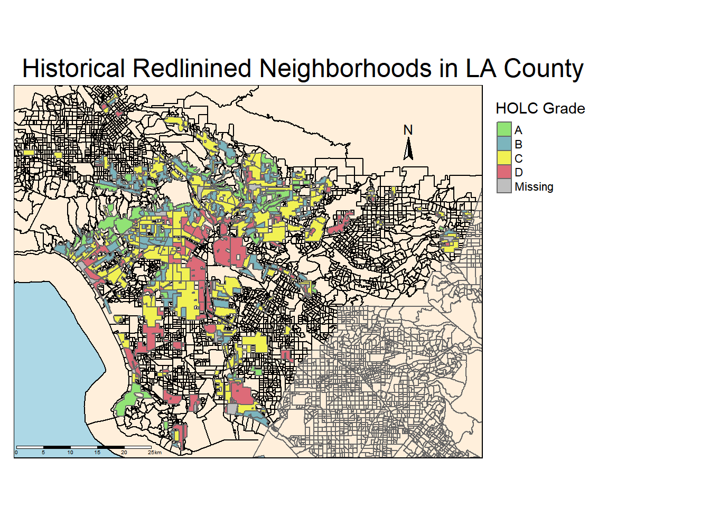
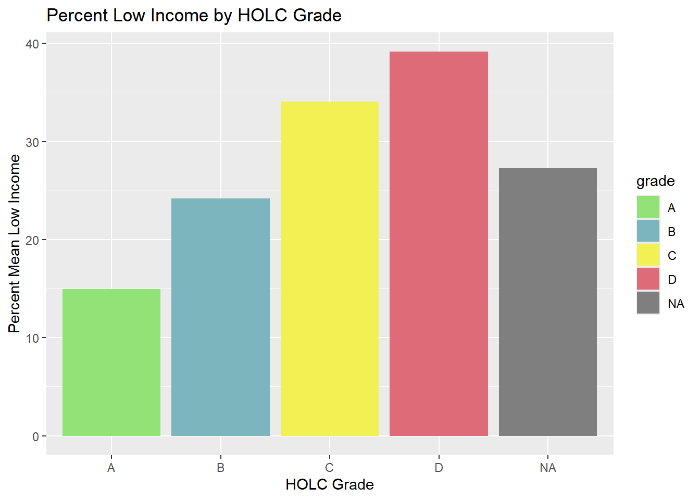
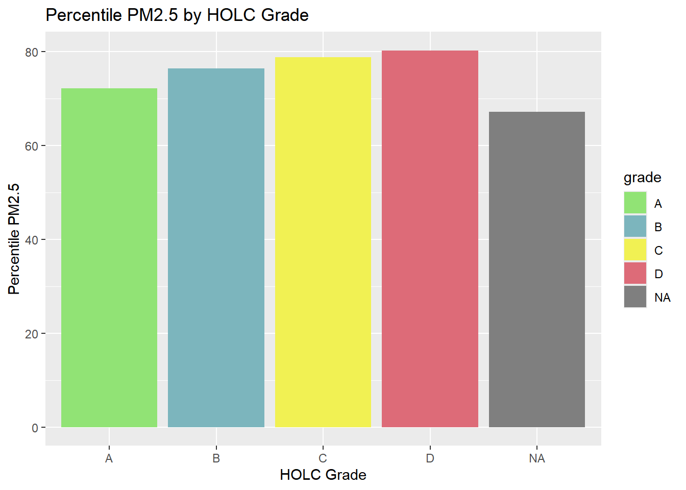
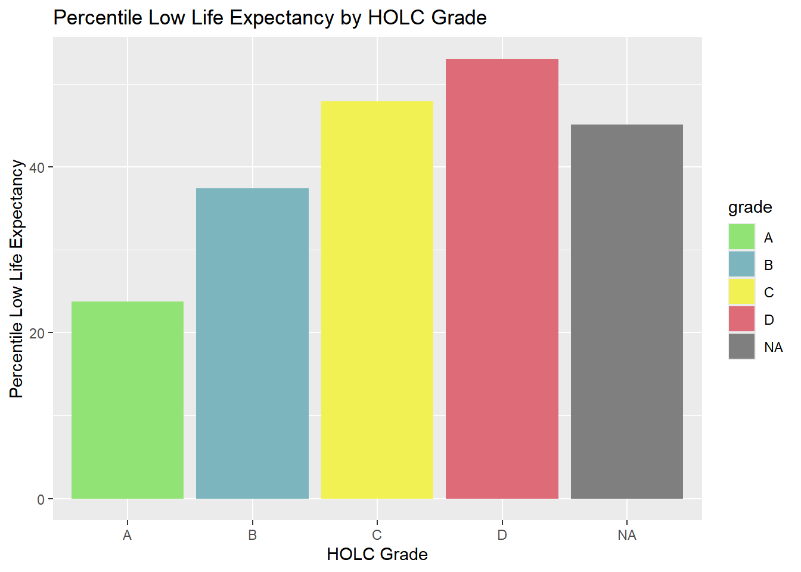
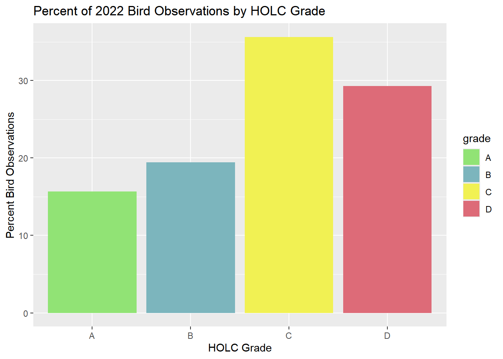

Show the code
library(here)
library(sf)
library(tmap)
library(stars)
library(dplyr)
library(tidyverse)
library(gt)
library(kableExtra)
library(testthat)Exploring patterns of environmental justice
library(here)
library(sf)
library(tmap)
library(stars)
library(dplyr)
library(tidyverse)
library(gt)
library(kableExtra)
library(testthat)# Read in EJScreen Data
ejscreen <- st_read(here("data", "ejscreen", "EJSCREEN_2023_BG_StatePct_with_AS_CNMI_GU_VI.gdb"))
# Read in HOLC Redlining data
holc <- st_read(here("data", "mapping-inequality", "mapping-inequality-los-angeles.json")) %>%
st_make_valid()
# Read in bird biodiversity data
birds <- st_read(here("data", "gbif-birds-LA", "gbif-birds-LA.shp"))# Check ejscreen data
st_crs(ejscreen) == st_crs(holc)[1] FALSEst_crs(ejscreen) == st_crs(birds)[1] FALSE# Check birds data
st_crs(birds) == st_crs(holc)[1] TRUE# Transform CRS of ejscreen to match Redline data
ejscreen <- st_transform(ejscreen, crs = st_crs(holc))# Make a conditional to see if datasets CRS match
if(st_crs(ejscreen) == st_crs(holc) & st_crs(ejscreen) == st_crs(birds) & st_crs(birds) == st_crs(holc) ) {
print("coordinate reference systems of datasets match")
} else {
warning("cooridnate reference systems to not match")
}[1] "coordinate reference systems of datasets match"# Filter ejscreen by LA county
ejscreen_LA <- ejscreen %>%
filter(CNTY_NAME == "Los Angeles County")
# Filter ejscreen by Orange County
ejscreen_orange <- ejscreen %>%
filter(CNTY_NAME == "Orange County")
# Filter ejscreen by San Bernardino county
ejscreen_sanb <- ejscreen %>%
filter(CNTY_NAME == "San Bernardino County")# Redline neighborhood map
# Initialize base map
tm_shape(ejscreen_LA, bbox = holc) +
tm_polygons(col = 'antiquewhite1',
border.col = "black") +
# Color neighborhoods by grade
tm_shape(holc) +
tm_polygons("grade",
palette = c("#91E375", "#7CB5BD", "#F1F153", "#DD6B78", "#858786"),
title = "HOLC Grade") +
# Add Orange County
tm_shape(ejscreen_orange) +
tm_polygons(col = 'antiquewhite1') +
# Add Riverside County
tm_shape(ejscreen_sanb) +
tm_polygons(col = 'antiquewhite1') +
# Fix map layout and add elements
tm_layout(bg.color = 'lightblue',
main.title = "Historical Redlinined Neighborhoods in LA County",
legend.outside = TRUE) +
# Add compass and scale bar
tm_compass(position = c('0.8', '0.8'),
size = 1.4) +
tm_scale_bar(position = c('0.001', '0.0001'),
lwd = 0.3,
text.size = 0.3)
# Table of % census block groups by grade
# Subset LA county EJscreen to Redline via st_intersects
holc_cbg <- st_join(ejscreen_LA, holc, join=st_intersects, left= FALSE) # perform inner join
# Group by grade
pct_holc <- holc_cbg %>%
group_by(grade) %>%
summarise(count = n())
# Find the percentage of block groups
pct_holc$pct <- ((pct_holc$count)) / sum(pct_holc$count) * 100
# Rename column and drop geometry
pct_holc <- pct_holc %>%
rename(percent = count) %>%
st_drop_geometry() %>%
select(grade, pct)
# Use testthat to ensure percentages add up to 100%
expect_equal(sum(pct_holc$pct), 100)
# Table output
kable(pct_holc,
col.names = c('HOLC Grade', "Percent of Census Block Groups"),
caption = "Percent of current census block groups within each HOLC grade")| HOLC Grade | Percent of Census Block Groups |
|---|---|
| A | 7.028804 |
| B | 19.395742 |
| C | 47.871008 |
| D | 21.070758 |
| NA | 4.633688 |
# Subset LA ejscreen to intersect Redline via intersects
ej_holc_int <- st_join(ejscreen_LA, y = holc, join = st_intersects, left = TRUE) # left join to match ejscreen data to redlining
# Summarize conditions within HOLC grades
holc_cond <- ej_holc_int %>%
group_by(grade) %>%
summarise(mean_income = mean(LOWINCPCT*100, na.rm=TRUE),
mean_pm25 = mean(P_PM25, na.rm=TRUE),
mean_life = mean(P_LIFEEXPPCT, na.rm = TRUE)) %>%
select(grade, mean_income, mean_pm25, mean_life)# Plot figure of percent mean low income by grade
ggplot(data = holc_cond, aes(x = grade, y = mean_income, fill = grade)) +
scale_fill_manual(values = c("#91E375", "#7CB5BD", "#F1F153", "#DD6B78", "#858786")) +
geom_bar(stat='identity') +
labs(title = "Percent Low Income by HOLC Grade",
x = "HOLC Grade",
y = "Percent Mean Low Income")
# Plot figure of percentile PM2.5 by grade
ggplot(data = holc_cond, aes(x = grade, y = mean_pm25, fill = grade)) +
scale_fill_manual(values = c("#91E375", "#7CB5BD", "#F1F153", "#DD6B78", "#858786")) +
geom_bar(stat='identity') +
labs(title = "Percentile PM2.5 by HOLC Grade",
x = "HOLC Grade",
y = "Percentile PM2.5")
# Plot figure of percentile low life expectancy by grade
ggplot(data = holc_cond, aes(x = grade, y = mean_life, fill = grade)) +
scale_fill_manual(values = c("#91E375", "#7CB5BD", "#F1F153", "#DD6B78", "#858786")) +
geom_bar(stat='identity') +
labs(title = "Percentile Low Life Expectancy by HOLC Grade",
x = "HOLC Grade",
y = "Percentile Low Life Expectancy")
When looking at percent low income, percentile of PM2.5 and percentile of low income by HOLC grade, both percent low income and percentile of low income grade display a relatively large disparity between grades A-B and B-C. The percentile of PM2.5 shows high percentiles (>70), however both C and D grades still have the highest values. Along with having restricted access to housing financing, the lower HOLC grades of C and D are disproportionately affected with a lower quality of life. As the lower grades are associated with negative viewpoints of instability and racial inequality, these neighborhoods get overlooked in terms of providing clean air or appropriate access to medical care.
# Filter bird data by Year 2022
birds_22 <- birds %>%
filter(year == 2022)
# Match CRS
birds_22 <- st_transform(birds_22, st_crs(holc))
# Subset bird observation data to holc
bird_holc_int <- st_join(birds_22, y = holc, join = st_intersects, left = FALSE) %>% # perform inner join to drop extra Redline data
filter(!is.na(grade)) # Display results only WITHIN redlined neighborhoods
# Find % Observations by grade
pct_bird_holc <- bird_holc_int %>%
group_by(grade) %>%
summarise(count = n()) %>%
mutate(pct = (count / sum(count))*100) %>%
select(-count) %>%
st_drop_geometry()
# Test that to ensure percentages add up to 100%
expect_equal(sum(pct_bird_holc$pct), 100)
# Tabulate data
kable(pct_bird_holc,
col.names = c('HOLC Grade', "Percent of Bird Observations"),
caption = "Percentage of Bird Observations in 2022 by HOLC Grade")| HOLC Grade | Percent of Bird Observations |
|---|---|
| A | 15.67568 |
| B | 19.41563 |
| C | 35.63185 |
| D | 29.27684 |
# Plot
ggplot(data = pct_bird_holc, aes(x = grade, y = pct, fill = grade)) +
scale_fill_manual(values = c("#91E375", "#7CB5BD", "#F1F153", "#DD6B78")) +
geom_bar(stat='identity') +
labs(title = "Percent of 2022 Bird Observations by HOLC Grade",
x = "HOLC Grade",
y = "Percent Bird Observations")
These results do not match the findings from the Ellis-Soto et al. 2023 paper. In the paper, HOLC grades C and D had a lower sampling density compared to grades A and B. Furthermore, grade C and D also contained the largest proportion of under-sampled neighborhoods.
The results from calculations above show that HOLC grades C and D make up nearly 70 of the census block groups, and that over 60% of observations came from the same HOLC grades.
Although there was no direct comparison for grouping Census blocks by grade, the paper used population density as a variable for predicted sampling density. Again, HOLC grades C and D display much lower density, whereas results from calculations above indicate these grades constitute a large portion of the census block and of bird observations.
tribble(
~Data, ~Citation, ~Link,
"Mapping Inequality: Redlining in New Deal America", "Nelson, Robert K., LaDale Winling, et al. (2023). Mapping Inequality: Redlining in New Deal America. American Panorama: An Atlas of United States History. Retrieved: 10/16/24 from https://dsl.richmond.edu/panorama/redlining","[Redlining Data](https://dsl.richmond.edu/panorama/redlining/data)",
"EJScreen: Environmental Justice Screening and Mapping Tool", "United States Environmental Protection Agency. 2024 version. EJScreen. Retrieved: 10/4/24 from www.epa.gov/ejscreen", "[EJScreen Data](https://www.epa.gov/ejscreen/download-ejscreen-data)",
"Biodiversity Observations", "Data from Global Biodiversity Information Facility", "[Biodiversity Data](https://www.gbif.org/)"
) %>%
kable()| Data | Citation | Link |
|---|---|---|
| Mapping Inequality: Redlining in New Deal America | Nelson, Robert K., LaDale Winling, et al. (2023). Mapping Inequality: Redlining in New Deal America. American Panorama: An Atlas of United States History. Retrieved: 10/16/24 from https://dsl.richmond.edu/panorama/redlining | Redlining Data |
| EJScreen: Environmental Justice Screening and Mapping Tool | United States Environmental Protection Agency. 2024 version. EJScreen. Retrieved: 10/4/24 from www.epa.gov/ejscreen | EJScreen Data |
| Biodiversity Observations | Data from Global Biodiversity Information Facility | Biodiversity Data |